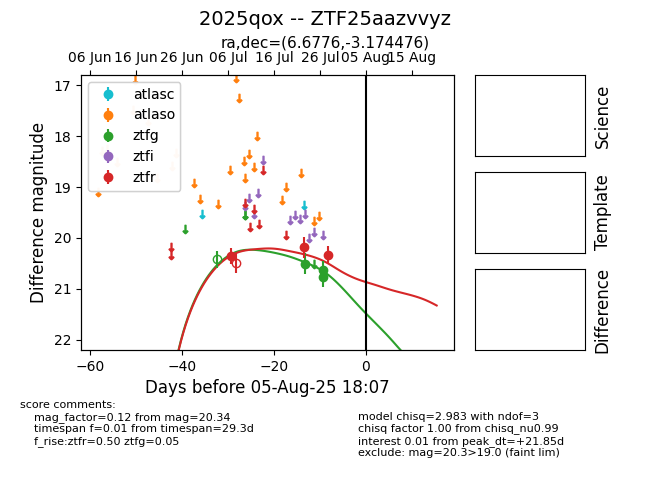

Target 2025qox at 2025-08-05 18:07, see:
FINK: fink-portal.org/2025qox
Lasair: lasair-ztf.lsst.ac.uk/objects/2025qox
ALeRCE: alerce.online/object/2025qox
TNS: wis-tns.org/object/2025qox
YSE: ziggy.ucolick.org/yse/transient_detail/2025qox
alt names
ZTF25aazvvyz (ztf,fink)
2025qox (tns,yse)
coordinates:
equatorial (ra, dec) = (6.6776,-3.17448)
galactic (l, b) = (108.0059,-65.32714)
photometry
last ztfg=20.76, ztfr=20.34
3 ztfg, 3 ztfr detections
